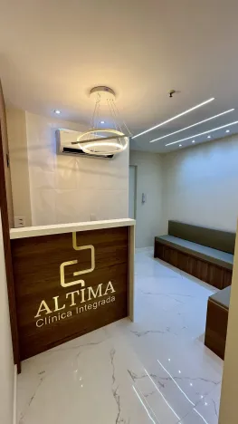
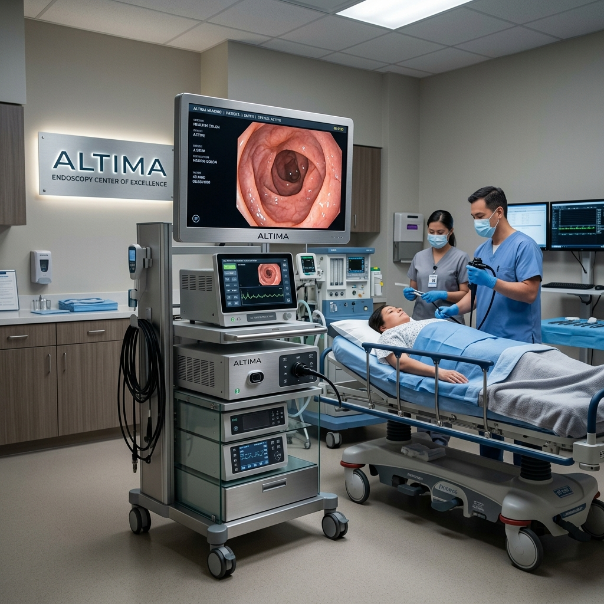
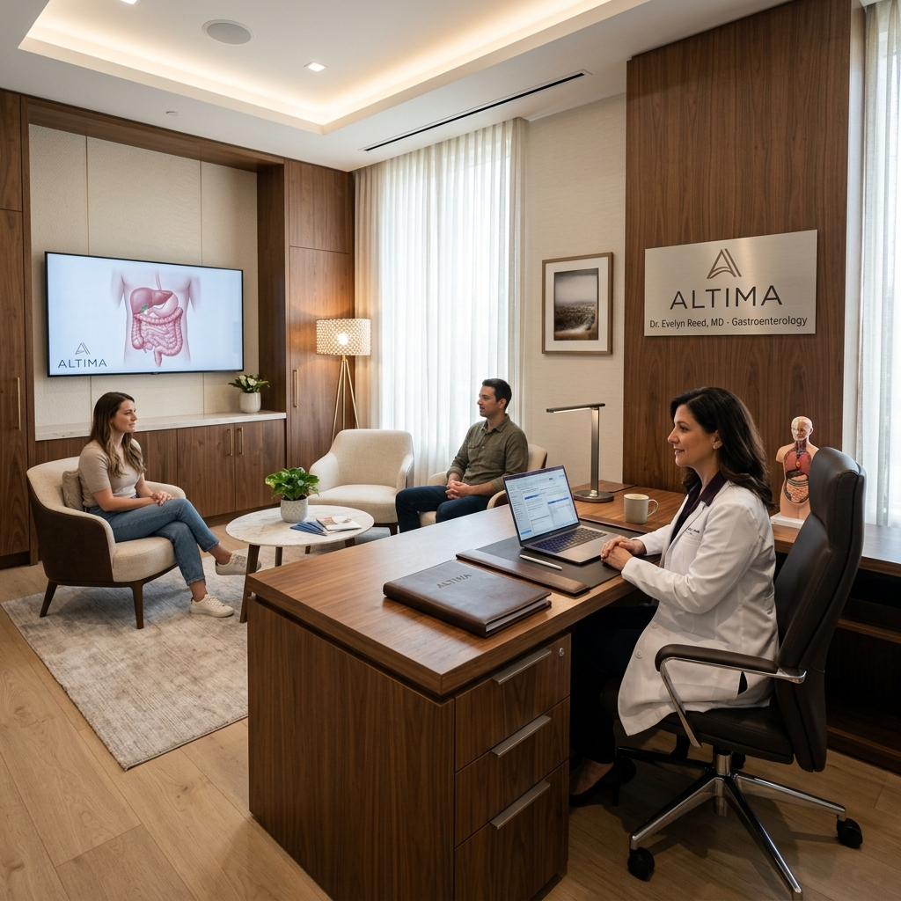
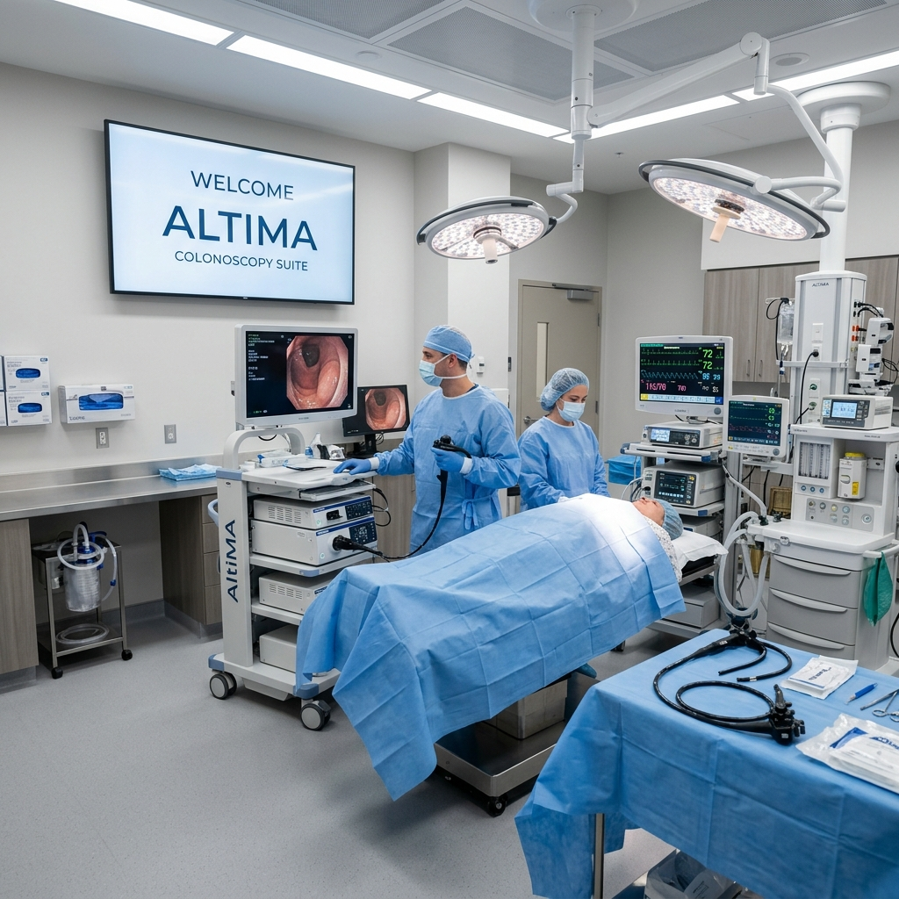

Cuidado integral que transforma vidas. Tradição, inovação e humanização genuína em cada procedimento.
A Altima Clínica Integrada nasceu do desejo de transformar a forma como o cuidado em saúde digestiva é realizado. Acreditamos que cada paciente merece um atendimento que vai além da técnica — que acolhe, que escuta e que respeita a singularidade de cada história.
Nossa clínica reúne tecnologia de ponta, um ambiente pensado para promover tranquilidade e uma equipe movida pela vocação genuína de cuidar.

Procedimentos
realizados com excelência
Comprometimento
com cada paciente
Anos de Tradição
Dedicados à saúde digestiva com ética e resultados
Oferecemos atendimento especializado nas duas grandes vertentes da saúde digestiva, com abordagem integrada e humanizada.

Exames diagnósticos e terapêuticos realizados com tecnologia de última geração, em ambiente seguro e acolhedor.

Diagnóstico e tratamento completo de doenças do aparelho digestivo com acompanhamento personalizado.

Exame essencial para prevenção e diagnóstico precoce, realizado com as técnicas mais modernas.
Três pilares que fundamentam cada detalhe da experiência Altima.
Mais de uma década dedicada à saúde digestiva, construindo uma reputação sólida baseada em competência, ética e resultados consistentes.
Equipamentos de última geração e protocolos atualizados constantemente, garantindo os melhores padrões internacionais de diagnóstico e tratamento.
Cada paciente é único. Nosso atendimento é pautado pela escuta ativa, empatia e respeito, criando vínculos de confiança que fazem a diferença no cuidado.
Um ambiente projetado para acolher, com sofisticação e conforto em cada detalhe.
Dê o primeiro passo rumo a uma saúde digestiva plena. Estamos prontos para cuidar de você com a excelência que você merece.
Atendimento humanizado e sem pressa. Estamos aqui por você.